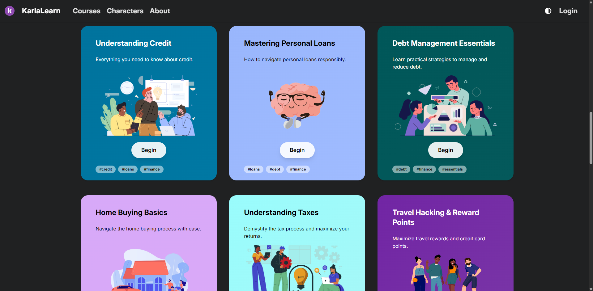
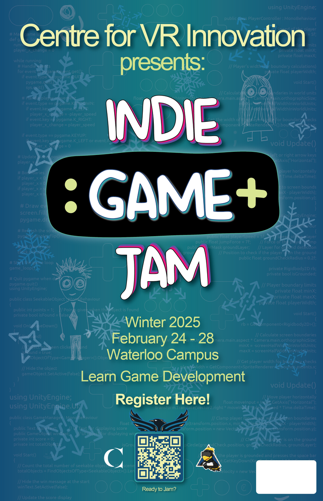

Fyzz
A trip planner where everyone votes on places and the day gets built around the weather and opening hours. Built over 20 milestones.
A collection of projects spanning UX/UI design, web development, and creative explorations.
A trip planner where everyone votes on places and the day gets built around the weather and opening hours. Built over 20 milestones.

A reservation and game library platform for board game cafés, with a customer site and a business portal. It took 2nd place at Conestoga's capstone demo day.

A financial literacy web app that helps international students and newcomers make sense of money in Canada. Built with a team of four in three months.

Posters and screen graphics I designed for two indie game jams at Conestoga College, made on quick turnarounds for both print and digital displays.
Try adjusting your search or filters to find what you're looking for.